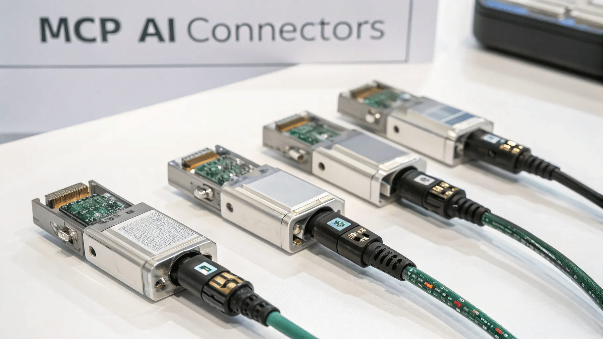

Você já imaginou uma inteligência artificial que conecta tudo o que você usa no dia a dia de forma simples e eficiente? Com o lançamento do MCP (Model Context Protocol), a Anthropic está revolucionando o desenvolvimento frontend design ai e a automação de tarefas. Neste guia, vamos explorar como essa tecnologia pode mudar o seu trabalho e a sua vida.
Sumário
- 🚀 Passo 1: O Que é o MCP?
- 🌟 Passo 2: A Importância do Conector Universal
- 🔧 Passo 6: Integração com Ferramentas do Dia a Dia
- 🌐 Passo 7: Benefícios de um Sistema Simples e Padronizado
- 🔌 Passo 8: Conectores Prontos para Uso
- 👥 Passo 9: Quem Pode Usar o MCP?
- 🔄 Passo 10: O Que Isso Muda na Prática?
- 🌍 Passo 11: A Evolução das IAs como Agentes Autônomos
- 📖 Passo 12: O Código Aberto do MCP
- 🔮 Passo 13: Visões Futuras com o MCP
- 🤝 Passo 14: Conclusão e Interação com o Público
- ❓ FAQ sobre o MCP e Inteligência Artificial
🚀 Passo 1: O Que é o MCP?
O MCP, ou Model Context Protocol, é um conector universal criado pela Antropic para sistemas de inteligência artificial. Imagine um cabo que conecta seu celular ao computador; o MCP faz algo semelhante, mas no mundo da IA. Ele permite que diferentes sistemas de IA se integrem a várias ferramentas e fontes de dados de forma simples e eficiente.
Esse protocolo foi desenvolvido para eliminar a necessidade de criar conectores específicos para cada ferramenta ou banco de dados. Antes do MCP, cada desenvolvedor tinha que lidar com múltiplas gambiarras para integrar suas aplicações. Agora, tudo isso ficou muito mais fácil.

Com o MCP, a IA pode acessar diversas contas e plataformas, como Google Drive, Slack e GitHub, sem complicações. Por exemplo, você pode querer que a IA organize seus documentos no Google Drive ou até crie um repositório no GitHub. O MCP foi projetado para conectar tudo isso em um só lugar.
🔗 Como Funciona na Prática?
Na prática, o MCP já possui conectores prontos para algumas das ferramentas mais populares. Isso significa que a IA pode acessar seus arquivos, criar documentos e interagir com chats de trabalho no Slack. Para os desenvolvedores, isso é um verdadeiro tesouro, pois a IA pode criar repositórios, revisar códigos e fazer solicitações de mudanças.
Além disso, se sua empresa utiliza uma ferramenta específica, é possível personalizar o MCP para integrar essa ferramenta também. Essa flexibilidade é uma das grandes vantagens do protocolo, tornando-o uma solução poderosa para o desenvolvimento frontend design ai.
🌟 Passo 2: A Importância do Conector Universal
A importância do MCP vai além de simplesmente conectar ferramentas. Ele representa uma mudança paradigmática na forma como as inteligências artificiais podem operar e interagir com o mundo. Com o MCP, a IA pode ser vista como uma assistente pessoal que organiza, gerencia e até toma decisões com base em dados acessados em tempo real.
Hoje, um dos maiores desafios para sistemas de IA avançados é a dificuldade de se conectar e trabalhar com outras ferramentas de maneira contínua. Com o MCP, essa barreira é quebrada. As ferramentas falam a mesma língua, permitindo que a IA entenda e execute tarefas de forma mais fluida.
À medida que as IAs se tornam mais avançadas, elas não são apenas respondedoras de perguntas. Elas estão evoluindo para se tornarem agentes que tomam decisões e realizam tarefas de forma autônoma. O MCP é fundamental nesse processo, pois fornece a infraestrutura necessária para essas interações complexas.
📈 O Futuro com o MCP
Imagine um futuro onde você pode pedir à sua IA para organizar arquivos, responder e-mails e agendar reuniões, tudo sem precisar mover um dedo. Isso não é apenas um sonho; é uma possibilidade real com a implementação do MCP. O protocolo cria uma ponte entre as ferramentas, permitindo que a IA execute tarefas de forma autônoma e eficiente.
Além disso, como o MCP é open source, qualquer pessoa ou empresa pode adaptá-lo para suas necessidades específicas. Isso acelera a adoção da tecnologia e permite que mais empresas entrem no ecossistema da inteligência artificial, sem depender exclusivamente da Antropic.
Com o MCP, o potencial de automação e eficiência é imenso. Imagine a IA organizando seus arquivos e enviando relatórios diretamente para seu chefe, tudo isso sem você precisar se levantar da cadeira. O MCP está aqui para tornar isso possível e muito mais.
🔧 Passo 6: Integração com Ferramentas do Dia a Dia
A integração com ferramentas do dia a dia é um dos aspectos mais revolucionários do MCP. Imagine ter uma IA que pode se conectar diretamente ao seu Google Drive, Slack ou GitHub, tornando tarefas rotineiras mais simples e rápidas. Isso não é apenas uma melhoria; é uma transformação na maneira como interagimos com a tecnologia.
Com o MCP, você pode solicitar que a IA organize seus documentos, envie mensagens em grupos do Slack ou até mesmo crie novos repositórios no GitHub. Essa integração não exige conhecimento técnico aprofundado, tornando a tecnologia acessível a todos. Qualquer pessoa pode aproveitar essa funcionalidade sem precisar ser um desenvolvedor.
Este nível de integração muda a dinâmica de trabalho. Em vez de alternar entre várias plataformas, você pode ter uma única interface onde a IA gerencia suas tarefas. Isso economiza tempo e reduz a frustração associada a tarefas manuais. E o melhor de tudo: você pode personalizar a IA para atender às suas necessidades específicas.
📊 Exemplos de Integração
- Google Drive: Organize documentos e crie pastas automaticamente.
- Slack: Responda a mensagens ou crie lembretes para reuniões.
- GitHub: Gere novos repositórios e faça commit de alterações.
🌐 Passo 7: Benefícios de um Sistema Simples e Padronizado
Um dos maiores benefícios do MCP é a simplicidade que ele traz ao integrar diferentes ferramentas. Com um sistema padronizado, as empresas podem economizar tempo e recursos. Não há mais necessidade de desenvolver soluções específicas para cada ferramenta.
Além disso, essa padronização permite que equipes trabalhem de forma mais colaborativa. Quando todos usam um sistema comum, a comunicação flui melhor e há menos confusão. Isso leva a um aumento na produtividade e à redução de erros.
Com o MCP, as empresas podem implementar soluções de inteligência artificial sem complicações. A IA se adapta ao fluxo de trabalho existente, em vez de exigir que os usuários mudem seus hábitos. Essa abordagem centrada no usuário é fundamental para a adoção bem-sucedida da tecnologia.
✨ Vantagens da Simplicidade
- Menos tempo gasto em integrações.
- Maior colaboração entre equipes.
- Facilidade de uso para todos os colaboradores.
🔌 Passo 8: Conectores Prontos para Uso
Os conectores prontos para uso são uma das características mais atraentes do MCP. Isso significa que você não precisa começar do zero; em vez disso, pode aproveitar as integrações já desenvolvidas para as ferramentas mais populares. Isso é um enorme facilitador para empresas que desejam implementar soluções de IA rapidamente.
Esses conectores permitem que a IA acesse dados e interaja com diferentes plataformas de maneira eficiente. Você pode começar a usar a tecnologia imediatamente, sem esperar por longos períodos de desenvolvimento. Isso é especialmente útil para startups ou pequenas empresas que precisam maximizar sua eficiência desde o início.
Além disso, a possibilidade de criar conectores personalizados para ferramentas específicas da sua empresa, se necessário, torna o MCP ainda mais flexível. Essa dualidade de conectores prontos e a capacidade de personalização é o que faz do MCP uma solução única no mercado.
🛠️ Exemplos de Conectores Disponíveis
- Google Drive: Acesso e gerenciamento de arquivos.
- Slack: Interação em tempo real com equipes.
- GitHub: Controle de versão e colaboração em projetos.
👥 Passo 9: Quem Pode Usar o MCP?
O MCP foi projetado para ser acessível a uma ampla gama de usuários. Atualmente, empresas que utilizam o cloud Enterprise já podem testar e implementar o protocolo. Isso inclui grandes corporações e startups que desejam aproveitar as vantagens da inteligência artificial.
A implementação do MCP não exige uma infraestrutura complexa. As empresas podem instalar os conectores localmente, aproveitando seus próprios sistemas, o que elimina a necessidade de depender de servidores externos. Essa flexibilidade é crucial para equipes que buscam soluções rápidas e eficientes.
Além disso, o fato de ser open source significa que qualquer desenvolvedor pode contribuir para o protocolo, adaptando-o às suas necessidades. Isso cria um ecossistema vibrante e em constante evolução, onde as empresas podem compartilhar soluções e melhorar continuamente suas integrações.
🌍 Usuários em Potencial
- Empresas de todos os tamanhos.
- Desenvolvedores que buscam personalização.
- Equipes que desejam otimizar processos diários.
🔄 Passo 10: O Que Isso Muda na Prática?
A introdução do MCP marca uma virada significativa na maneira como as inteligências artificiais interagem com as ferramentas existentes. Com a capacidade de se conectar e integrar facilmente a várias plataformas, a IA se torna uma assistente virtual muito mais poderosa e útil.
Na prática, isso significa que tarefas que costumavam levar horas podem ser feitas em minutos. A IA pode automatizar processos complexos, permitindo que os colaboradores se concentrem em atividades mais estratégicas e criativas. O MCP transforma a IA em um verdadeiro parceiro de trabalho.
Além disso, a evolução contínua do MCP e sua natureza open source garantem que ele se adapte às necessidades em constante mudança das empresas. À medida que novas ferramentas e tecnologias surgem, o MCP pode ser atualizado para oferecer suporte a essas inovações, mantendo sua relevância no futuro.
🚀 Impacto no Dia a Dia
- Automatização de tarefas rotineiras.
- Aumento da eficiência e produtividade.
- Maior foco em inovação e criatividade.
🌍 Passo 11: A Evolução das IAs como Agentes Autônomos
A evolução das IAs como agentes autônomos é um dos aspectos mais fascinantes do MCP. Com a capacidade de integrar e interagir com várias ferramentas, as IAs estão se transformando de simples assistentes em agentes que podem tomar decisões e realizar tarefas de forma independente. Imagine uma IA que não apenas responde perguntas, mas também organiza suas informações, gerencia seus projetos e até mesmo se comunica com seus colegas de trabalho.
Esse avanço é possível porque o MCP permite que a IA acesse dados em tempo real de diferentes plataformas. Isso significa que ela não precisa mais depender de comandos manuais para executar tarefas. Em vez disso, a IA pode analisar o contexto e agir de acordo com as necessidades do usuário.
🚀 O Que Isso Significa Para o Futuro?
O futuro com IAs autônomas é promissor. À medida que o MCP se torna mais amplamente adotado, podemos esperar que as IAs se tornem cada vez mais integradas em nossas rotinas diárias. Elas poderão gerenciar nossas agendas, organizar nossos arquivos e até mesmo tomar decisões com base em dados analíticos.
Essa transformação trará não apenas eficiência, mas também liberdade. Com as IAs assumindo tarefas repetitivas, os profissionais poderão se concentrar em atividades mais criativas e estratégicas. O MCP é a chave para desbloquear esse potencial.
📖 Passo 12: O Código Aberto do MCP
Uma das características mais impactantes do MCP é que ele é open source. Isso significa que qualquer desenvolvedor ou empresa pode acessar, modificar e adaptar o protocolo para suas necessidades específicas. Essa abertura promove um ecossistema colaborativo onde inovações podem ser compartilhadas e aprimoradas continuamente.
O código aberto facilita a customização, permitindo que as empresas criem soluções adaptadas ao seu contexto. Isso é especialmente valioso em um mundo onde as necessidades de tecnologia estão em constante evolução. Com o MCP, as empresas não estão limitadas às soluções oferecidas pela Antropic; elas podem inovar e desenvolver suas próprias integrações.
💡 Vantagens do Código Aberto
- Inovação Contínua: A comunidade pode contribuir para melhorias e novas funcionalidades.
- Customização: Empresas podem adaptar o MCP às suas necessidades específicas.
- Redução de Custos: Acesso a uma tecnologia poderosa sem custos de licenciamento.
🔮 Passo 13: Visões Futuras com o MCP
O MCP abre um leque de possibilidades para o futuro das interações entre humanos e máquinas. Imagine um cenário onde você pode simplesmente falar com sua IA e ela entende suas necessidades, organizando tudo de forma eficiente. Essa visão se torna mais realista com a evolução do MCP e a crescente capacidade das IAs.
A integração contínua e a automação de tarefas não são apenas um sonho. No futuro, podemos esperar que as IAs sejam capazes de gerenciar projetos inteiros, permitindo que as equipes se concentrem na criatividade e na inovação. Com o MCP, a IA pode se tornar um membro ativo da equipe, ajudando a tomar decisões informadas e otimizando processos.
🌈 O Impacto na Indústria
As indústrias também serão profundamente impactadas pelo MCP. Setores como saúde, educação e finanças poderão usar IAs autônomas para melhorar a eficiência e a precisão. Isso significa que tarefas que antes eram demoradas e propensas a erros poderão ser realizadas com rapidez e eficácia.
- Saúde: IAs organizando dados de pacientes e gerenciando agendamentos.
- Educação: Personalização de aprendizado através de IAs que analisam o desempenho dos alunos.
- Finanças: Análise de dados em tempo real para decisões de investimento.
🤝 Passo 14: Conclusão e Interação com o Público
Em resumo, o MCP é mais do que um simples conector; é um facilitador para a evolução das IAs como agentes autônomos. À medida que adotamos essa tecnologia, estamos nos preparando para um futuro onde a inteligência artificial não apenas responde perguntas, mas também se torna uma parte integral de nossas vidas diárias.
Agora, eu quero saber de você: como você imagina que o MCP pode impactar sua rotina de trabalho? Quais tarefas você gostaria que uma IA pudesse realizar por você? Deixe suas ideias e comentários abaixo! Sua interação é fundamental para que possamos continuar explorando juntos o fascinante mundo da inteligência artificial.
❓ FAQ sobre o MCP e Inteligência Artificial
1. O que é o MCP?
O MCP, ou Model Context Protocol, é um conector universal desenvolvido pela Antropic que permite que sistemas de inteligência artificial integrem-se facilmente com várias ferramentas e fontes de dados.
2. Como o MCP pode beneficiar empresas?
O MCP permite a automação de tarefas, integração simplificada de ferramentas e maior eficiência no gerenciamento de projetos, permitindo que as empresas se concentrem em atividades mais estratégicas.
3. O que significa ser open source?
Ser open source significa que o código do MCP está disponível para qualquer pessoa modificar e adaptar, promovendo inovação e customização.
4. Quais são os exemplos práticos de uso do MCP?
Exemplos incluem a automação de organização de arquivos no Google Drive, gerenciamento de projetos no GitHub e interações em tempo real no Slack.
5. Como as IAs estão se tornando agentes autônomos?
Com o MCP, as IAs podem acessar dados de forma rápida e prática, permitindo que tomem decisões e realizem tarefas sem intervenção humana.